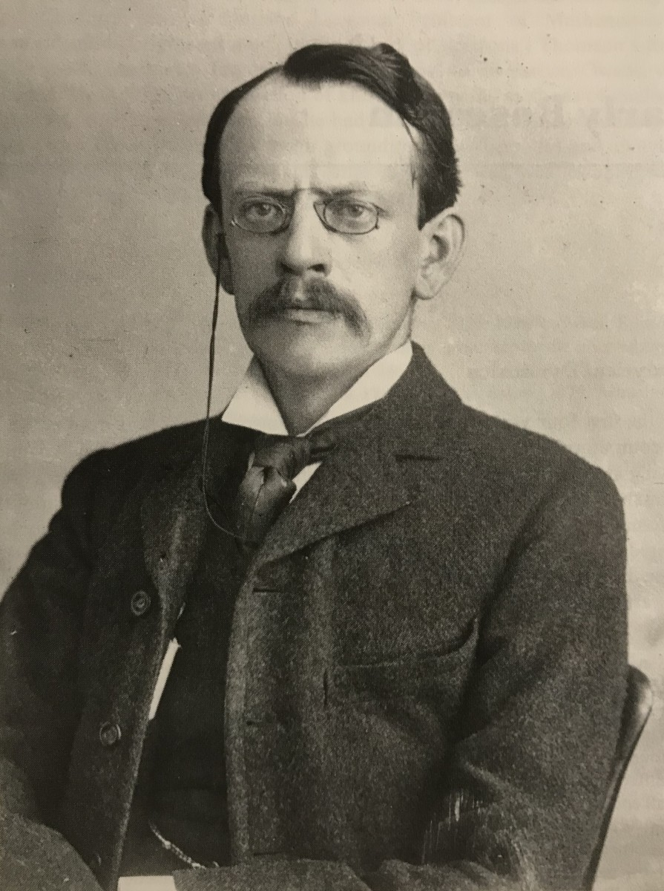
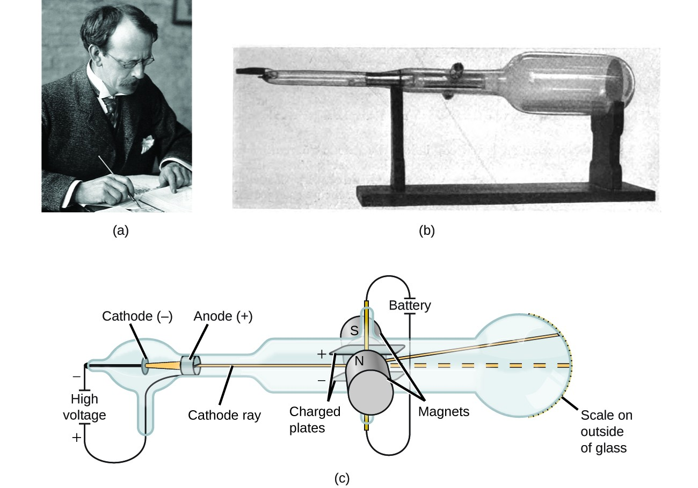
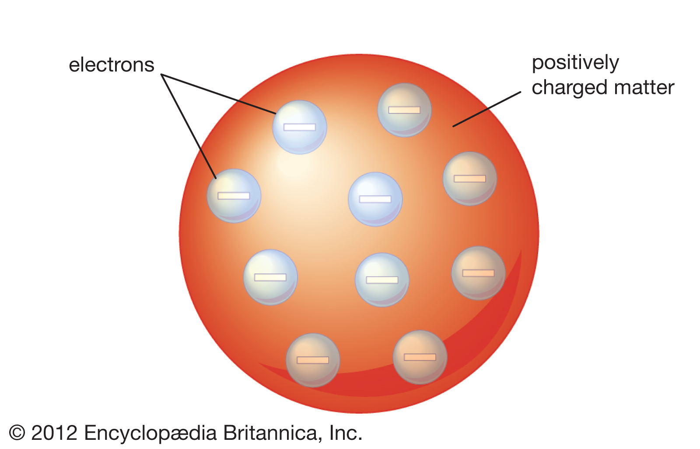

1897
Thomson provided the first hint that an atom is made of even smaller particles.
With his experiments, the Cathode Tube Experiment, he discovered Electrons.
Thomson studied the passage of an electric current through a gas. As the current passed through the gas, it gave off rays of negatively charged particles. This surprised Thomson, because the atoms of the gas were uncharged. Thomson concluded that the negative charges came from within the atom. A particle smaller than an atom had to exist. The atom were divisible! Thomson called the negatively charged "corpuscules" today know as electrons. He created his Plum Pudding Model.
After we have:Ernest Rutherford.